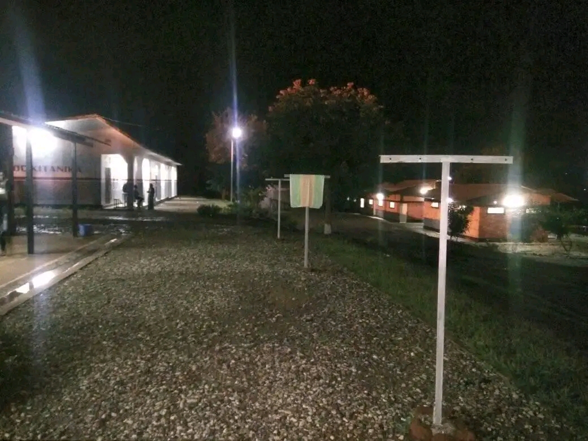
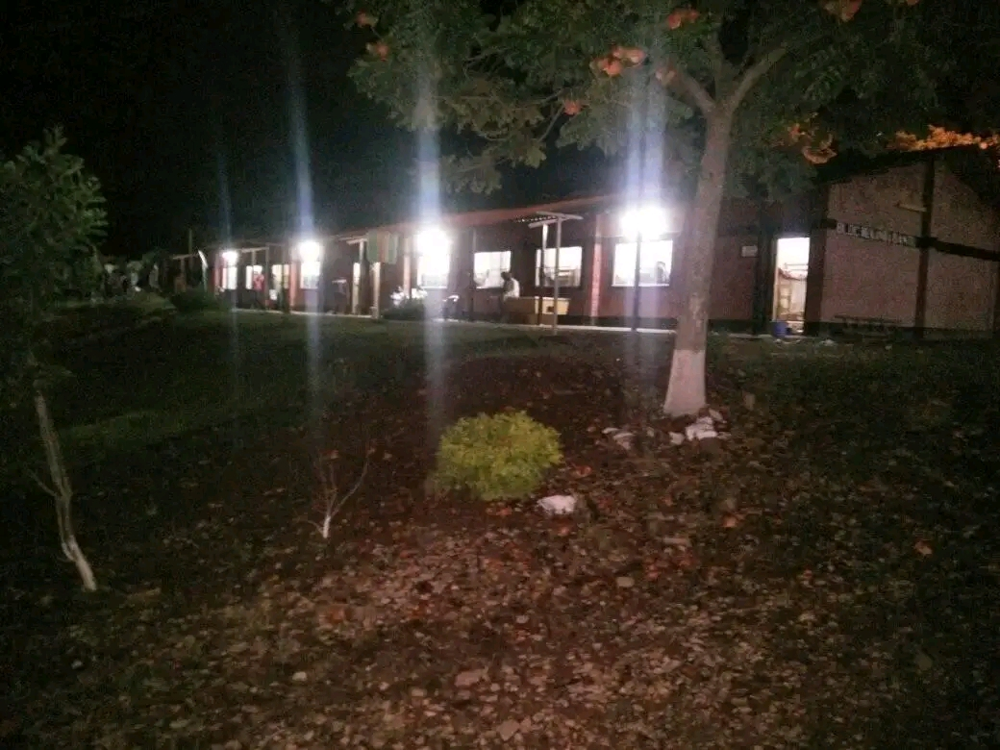
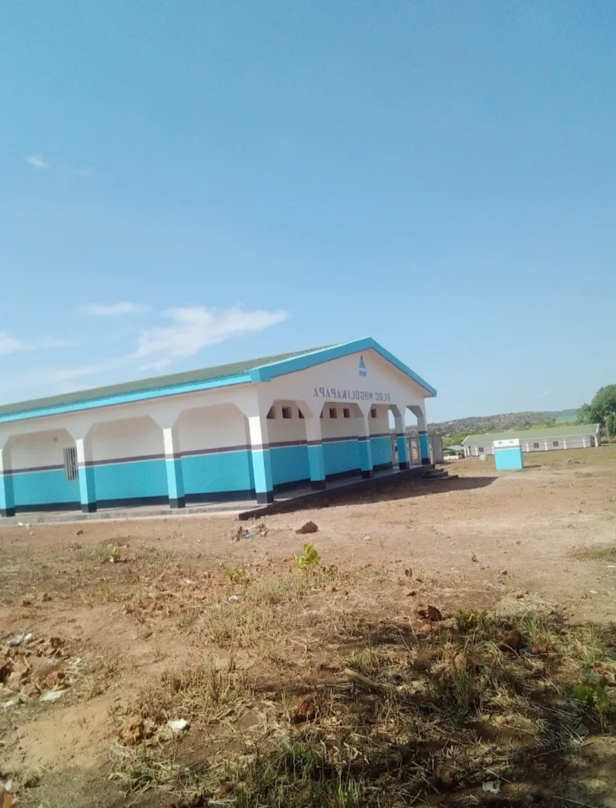

Pour organiser la vie sociale des étudiants et promouvoir leurs activités culturelles et sportives, l'Institut Supérieur de Techniques médicales M'siri 1er dispose d’une Direction des Œuvres estudiantines.
Cette Direction comprend les services suivants :
Le Conseil des Œuvres estudiantines est un organe de cogestion de la Direction des Œuvres estudiantines. Il s’occupe :
Les cités universitaires disposent des chambres avec lits pour loger des étudiants célibataires. Pour y être logé, il faudra au préalable signer un contrat de bail avec la Direction des Œuvres Estudiantines.
Toute demande de logement dans les résidences estudiantines doit être faite dans un formulaire ad hoc mis à la disposition des étudiants par la Direction des Œuvres Estudiantines. L’étudiant transmettra sa demande à la Commission de logement, qui décidera de l’attribution du logement.